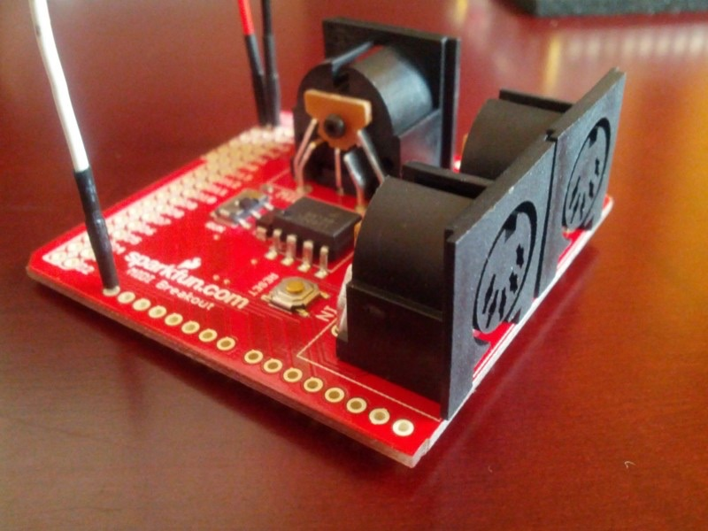
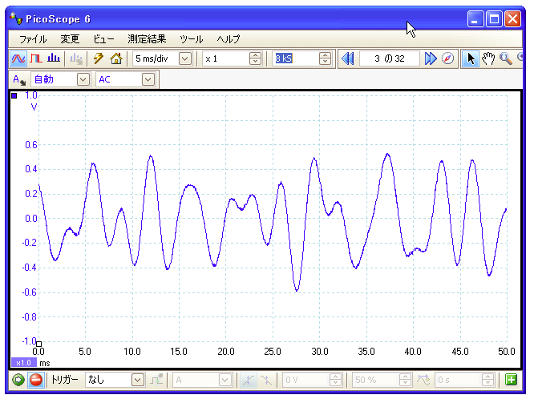
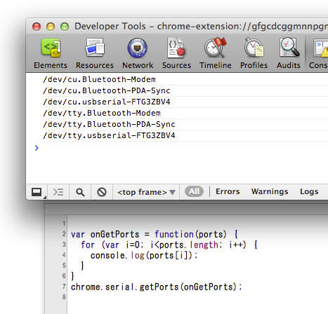
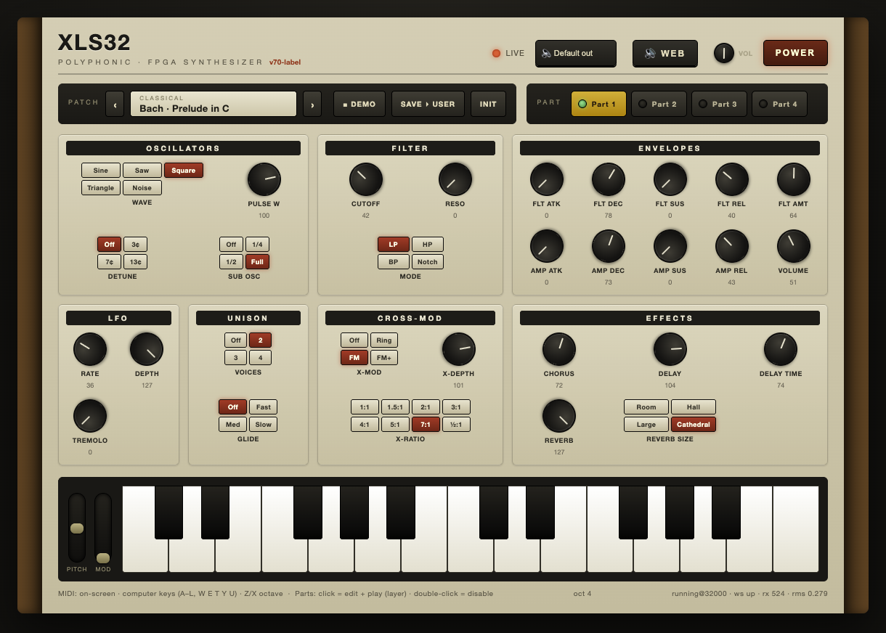
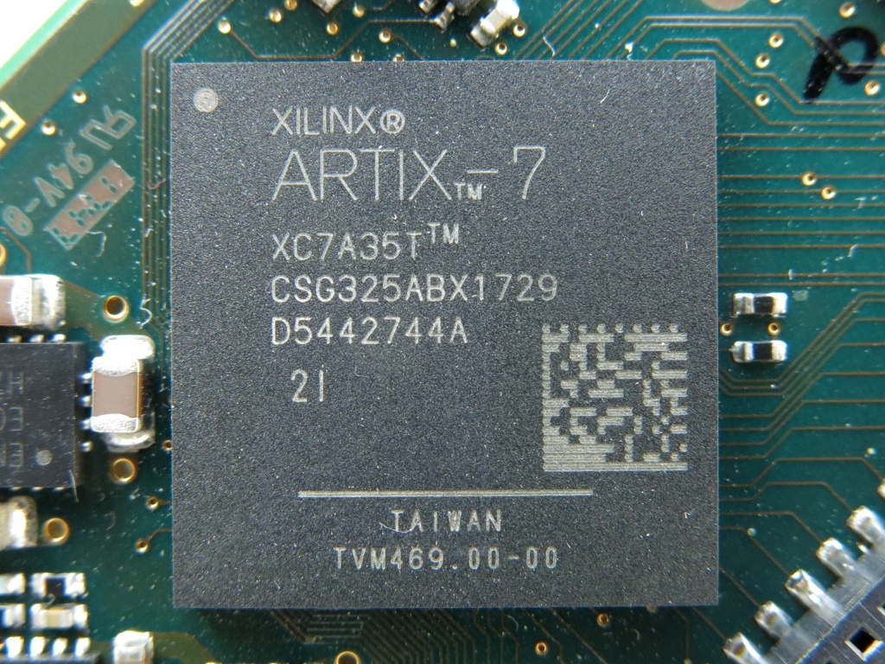
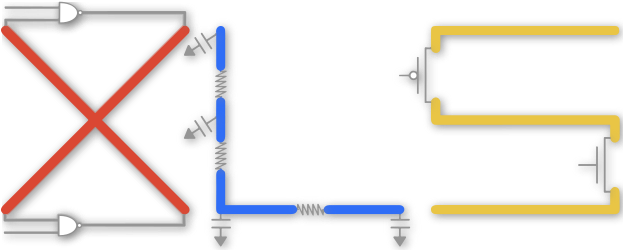
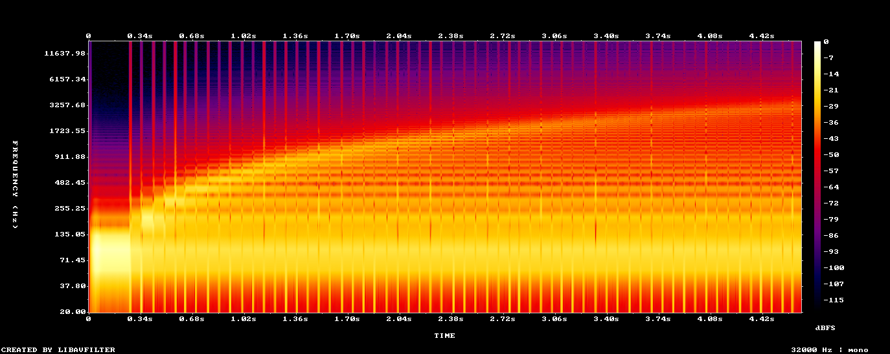
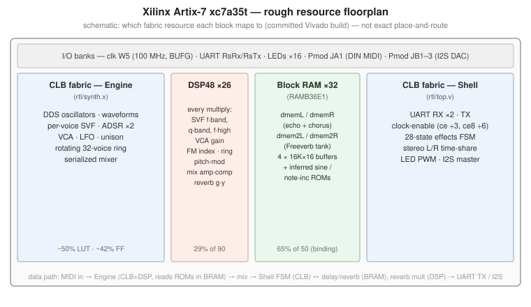

A 32-voice polyphonic synthesizer in Google XLS (DSLX) — designed, built,
and hardware-verified end-to-end by an AI coding agent through loop engineering.
Thirty seconds on me — and on the FPGA synthesizer I built by hand in 2012,
which is the same instrument this deck rebuilds without writing a line of it.
Talks, demos, and a lot of sample code — mostly about AI
XLS32 is a personal side project, open-sourced under Apache-2.0
github.com/kazunori279/xls32-fpga-synth
The opinions expressed here are my own, not those of my employer.
Me and FPGAs: the 2012 prototype
Fourteen years ago I built this same instrument by hand — an Altera DE0, hand-written
Verilog, three blog posts over two weeks.
MIDI, by handDec 15, 2012

A SparkFun MIDI breakout into the DE0. 31.25 kbps async serial, oversampled 4× by a
Verilog state machine — the first win was 90h 3Ch 40h showing up on the LEDs.
Eight voicesDec 19, 2012

A sine lookup table and a note→step-size table, with eight WaveGen modules passing
MIDI down a chain to allocate voices. Summing them clipped 8 bits, so the mix moved to the DAC's 12.
Knobs in the browserDec 29, 2012

ADSR as HDL counters, one line of Verilog for the VCA — driven over an FTDI cable at
921.6 kbps from a Chrome packaged app, jQuery Knob dials talking to chrome.serial.
Same idea, fourteen years apart. 2012: 8 sine voices, hand-written Verilog, roughly
a weekend per feature — and it stopped there. 2026: 32 voices, 4 parts, filters and effects,
130+ scored hardware tests — and I wrote none of it.
01
What is XLS32
Meet the instrument — what it is, and the browser panel driving the real board
over USB: oscillators, filter, envelopes, effects, and the 4-part demo songs.
What is XLS32?
A 32-voice, 4-part multitimbral subtractive synthesizer —
a literal circuit clocked at 100 MHz that computes one audio sample per tick.
Written in Google XLS (DSLX), not hand-written Verilog
Runs on a Basys 3 board (Xilinx Artix-7 xc7a35t)
Played live from a browser analog-style panel over USB
MIDI in, 16-bit stereo audio out — plus I2S DAC and DIN MIDI
Open source: Apache-2.0 on GitHub
Because the board was developed remotely, every feature is checked
over the USB UART — audio verified on the host by FFT and spectrogram.

The web UI driving the FPGA synth live over USB
Demo: the web UI plays the board
Browser UI any device on the network
Analog-style panel — knobs send MIDI CCs; play via on-screen keys,
computer keys, or a Web-MIDI controller
▼ MIDIWebSocketPCM frames ▲
Web server webui/server.py — the host Mac
FastAPI bridge — owns the serial port, byte-aligns the audio stream,
forwards MIDI down and audio up
▼ MIDI bytesUSB UART · 2 Mbaud16-bit stereo ▲
Basys 3 board the synth circuit
Flashed with the prebuilt firmware/top.bit — the FPGA computes
every sample; no toolchain needed to demo
Demo video — the web UI driving the board, with the synth's own audio youtu.be/2ROr9M_ZlVY
Not a single line of it was written by hand —
and every feature is verified by machineThe whole design was built by Claude Code (Opus 4.8) through a self-verifying
build → measure → revise loop, over a network, with no human watching the board —
and almost all features were developed from a smartphone, during a one-week trip.
02
The technology stack
Why put a synth in FPGA fabric — and the three technologies that make it possible:
the board, the language, and the toolchain.
Subtractive synth 101
Start with a harmonically rich wave, then carve away. Every block on this slide exists as a circuit in XLS32.
Oscillators
Generate raw, harmonically rich waves — saw, square, triangle, noise.
Detune and unison thicken the sound.
Filter
The "subtractive" part: a resonant filter carves the spectrum —
sweep the cutoff and the timbre moves.
Amplifier
An ADSR envelope (attack · decay · sustain · release) shapes loudness —
pluck, pad, or organ is mostly this curve.
Effects
Chorus, delay, reverb add width and space — the difference
between a tone and an instrument.
Modulation makes it move: envelopes and LFOs wiggle pitch, cutoff, and amplitude.
A patch is just a setting for every block — in XLS32, each one is a MIDI CC.
Other synthesis families: sampling · wavetable · FM ·
additive · physical modeling · analog modeling (virtual analog). XLS32 is subtractive at heart —
with a taste of FM from its cross-oscillator mod.
The synth, by the numbers
Spec
Notes
Polyphony
32 voices, time-multiplexed — one voice per engine cycle
4-part multitimbral (MIDI ch 1–4), shared dynamic voice pool
Oscillators
2 per voice + sub-osc → up to 64 across the 32 voices
5 waveforms, PWM, cross-osc ring / FM / FM+ (8 ratios)
Filter
Per-voice resonant state-variable — LP / HP / BP / notch
− HDL + timing closure: the hardest dev loop (what this talk attacks)
ASIC
Classic chips at scale — Yamaha DX7 FM chips, the C64 SID
+ Cheapest per unit, lowest power, fully custom
− Millions in NRE, months per spin, no do-overs after tape-out
Easiest to buildHardest to build
XLS32 takes the FPGA path — hardware guarantees without ASIC economics —
and attacks its weakness: the development loop.
Why an FPGA, not Web Audio?
Deterministic, tiny latency
A fixed-length pipeline computes one sample per clock — delay through the datapath is a
fixed handful of cycles: sub-millisecond and jitter-free.
Web Audio renders 128-sample blocks on top of a ~10–40 ms OS buffer,
sharing the CPU with the UI and the garbage collector.
Hard-real-time datapath
32 voices time-multiplex through one pipeline — all finished inside every sample tick.
The per-sample work is a fixed cycle budget that always completes, regardless of the patch.
A CPU's timing is best-effort and degrades as polyphony and load grow.
Customizable to the bit
Arbitrary fixed-point widths, a bespoke oscillator/filter topology, sample-accurate
modulation routing — and the same design drives a DAC or hardware MIDI
with no OS/driver round-trip.
It's a real instrument, not a browser tab.
FPGA 101
A field-programmable gate array — a grid of logic you wire up into any digital circuit, then rewire by reflashing.
LUT fabric
Thousands of
look-up tables + flip-flops; programmable routing wires them into any logic.
DSP slices
Hardened
multiply-accumulate blocks in vertical stripes — fast math off the fabric.
Block RAM
Dedicated
on-chip memories, also in stripes — buffers and tables, with clocked reads.
The bitstream
The "program":
a circuit description loaded at power-up — your design becomes the chip.
XLS32's Artix-7 xc7a35t: 20,800 LUTs · 90 DSP slices ·
36 Kb × 50 block RAMs · one 100 MHz clock — the synth is a literal circuit computing
one audio sample per tick.

The exact chip: an Artix-7
XC7A35T on a board — photo by Pedant01, Wikimedia Commons, CC BY-SA 3.0
Where FPGAs run in the real world
Anywhere the deadline is set by physics and latency is measured in micro- or nanoseconds.
Automotive
The Subaru Levorg's EyeSight ADAS: stereo-camera
vision on a Zynq UltraScale+ — one FPGA-SoC per car, across millions of Subarus.
Different industries, one reason: when the deadline is physics, the logic goes
into hardware. XLS32 borrows the same superpower for music.
Verilog and the standard dev flow
A hardware description language: you describe the circuit register-by-register, wire-by-wire, clock-by-clock.
Write RTL
Registers, wires, always blocks — plus pipeline stages, handshakes,
and bit widths, all managed by hand.
Simulate
A testbench drives the design (iverilog, Verilator) — cycle-accurate,
but only as good as the testbench you wrote.
Synthesize
yosys / Vivado map the RTL onto LUTs, DSPs, and BRAMs —
a netlist of real chip primitives.
Place & Route
Fit the netlist onto the die and check timing —
the slow step: minutes to hours per iteration.
Flash & test
Program the bitstream over JTAG and verify on
real hardware.
Fail timing and you're back to editing RTL. This loop is the iteration cost that
XLS32's whole methodology — HLS plus cloud builds plus machine-graded verification — is built to shrink.
Google XLS 101: hardware as software

High-Level Synthesis (HLS): compile a software-style description of
behavior into a hardware circuit — the compiler writes the RTL for you
(Wikipedia ↗)
XLS is Google's open-source HLS toolkit; you write DSLX — a Rust-like
language of pure functions and small stateful procs
Scheduling, pipeline-register insertion, and bit-width narrowing are automatic
Unit tests run in milliseconds in the interpreter — no testbench,
no simulator, no build
Most iterations never touch the FPGA tools at all — that's what makes
the agent loop fast.
What you want to build
A synth voice: oscillator → filter → envelope — as math
▼
DSLX — describe the behavior
Pure functions and procs; unit-test in milliseconds
▼codegen
Verilog — the compiler emits RTL
Scheduled, pipelined, bit-width-narrowed — for you
▼synth + P&R
Gates on the chip
Synthesis + place & route map it onto LUTs, DSPs, BRAM
From synth.x to engine.v
The same oscillator logic, before and after the compiler — abridged from the real code.
synth.x — what you write (DSLX)
// One oscillator sample: turn the phase into a wave.// Bit-widths are types: u3/u32 unsigned, s16 signed wires.fnvoice_wave(wave: u3, phase: u32,
noise: s16) -> s16 {
let t = phase[24:32]; // cycle position 0..255match wave {
u3:0 => SINE[t], // sineu3:1 => (t ass16) * s16:16 - s16:2048, // sawu3:4 => noise, // noise
_ => SINE[t],
}
}
+ Write pure
functions, as usual — code reads top-to-bottom, composes, and unit-tests like software.
+ The tool does
the state management and scheduling — which value lands in which register on which cycle
(48 stages here) is the compiler's problem.
− Where cycle-exact
control matters (BRAM ports, I/O), you still drop to the Verilog shell.
+ Full
control over every register, port, and clock cycle — when you truly need it.
− Everything
happens in parallel: every always block fires on every clock, all at once —
nothing reads top-to-bottom.
− It's all state
management and scheduling, by hand: which value is in which register on which cycle is
your problem — the classic wall for software engineers.
DSLX to bitstream — the build pipeline
DSLX
synth.x — the whole engine in one 378-line proc. Unit tests run in
milliseconds via the interpreter.
fix_verilog.py injects the global clock-enable and unrolls
generate loops the open flow rejects.
Synth + P&R
yosys → VPR (F4PGA), nextpnr (openXC7), or Vivado —
selected by BACKEND=.
Flash
openFPGALoader over JTAG — SRAM for iteration, SPI flash for
standalone boot.
One command end to end: STAGES=48 WCT=48 scripts/remote_build.sh —
push sources to a GCE VM, build, pull back top.bitplus the timing report.
Never trust a build you haven't measured.
03
Loop engineering with AI agents
This whole board was brought up remotely and headlessly — no one watching LEDs,
listening to a speaker, or pressing buttons.
"Design a tight, self-verifying edit → build → run → observe cycle, and let
the agent iterate inside it."
Loop engineering
instead of hand-prompting each step
The loop
Give the agent an objective pass/fail, and the loop runs unattended.
Edit
The agent changes synth.x (DSLX) — new feature, fix, or timing tweak.
Build
Bitstream on a native x86 GCE VM, ~6 min — timing report teed back with it.
Flash + drive
openFPGALoader over JTAG, then MIDI in / audio captured over the same USB cable.
Verify
FFT / spectrogram scored 0–100. Pass → milestone done. Regression → back to Edit.
The load-bearing ingredient: autonomous verification
Every feature emits a signal a machine can grade without human senses:
Audio is teed out over USB as a sample stream
Pitches verified by FFT — a chord is N simultaneous peaks
Timbre and stability verified by spectrogram — haze, clipping, and dropouts are obvious
130+ scored e2e tests: basic features, combinations, stress — each 0–100, failing on regression
Lesson: a single FFT peak-check once passed while the audio was corrupted.
Render the whole capture as a spectrogram, not one clean slice.

A cutoff sweep, verified as a spectrogram — the machine reads this, not a person
A loop is only as good as its cycle time
FPGA place-and-route is the slow step — so the build was moved to the cloud.
Apple Silicon MacF4PGA under x86 emulation (Docker)
~10 min
Native x86 GCE VMscripts/remote_build.sh — sources up, bitstream + timing back
~6 min
DSLX unit teststhe inner loop — most iterations never need a build
ms
The agent gets its verdict sooner and fits more iterations into an hour —
and the laptop stays free. Prototype in a software model first; spend builds only to confirm.
Built in verifiable increments — M1 to M19
M1M3M6aM6bM13–14WEB UIM19
First soundOne DDS sine + ADSR, verified over UART from afar.
Real MIDI inUART RX + parser + voice allocation; FFT confirms the pitches.
Pipelined engineRewrite: time-multiplexed 32-voice proc — one voice per cycle.
Per-voice filterEvery voice gets its own resonant SVF + key-tracking.
BRAM effectsChorus, ping-pong delay, and Freeverb reverb in block RAM.
Browser panelSerum-style UI, presets by inverse synthesis (CMA-ES).
Cross-osc FMRing / FM — inharmonic bells; the de-latch fix hardens the SVF.
What each milestone actually sounded like
Every clip is a capture off the Basys 3 — the picture is the spectrogram
of the audio you are hearing. Click a clip to play it.
M1 · first sound0:06
One DDS sine plus a linear ADSR at 8-bit / 4 kHz. Thin — but it proved
the edit → build → flash → measure loop was closed.
M6b · per-voice filter0:10
After the pipelined rewrite every voice gets its own resonant SVF —
hear the cutoff sweep open and the resonance start to sing.
M9 · noise + sub-osc0:13
Three cheap analog staples at once: LFSR noise, a multimode filter,
and a sub-oscillator an octave down.
M13 · chorus + delay0:13
First use of block RAM — a 16K×16 delay line drives interpolated
chorus taps and a ping-pong echo. Mono becomes wide.
M14 · reverb0:11
A Schroeder / Freeverb tail in BRAM — feedback combs plus all-passes,
room through cathedral. Its multiplies forced the ÷4 clock.
M15 · unison0:13
Voice-stacking — 2 / 3 / 4 detuned, phase-decorrelated voices per note.
A thick super-saw, paid for with max polyphony of 32 ÷ N.
…and what it sounds like once the machine grades it
The same capture rig, pointed at the finished instrument.
e2e test report4:41
The agent's own regression run as a captioned spectrogram: 52 tests
over USB — basic, integration, and strict stress — each re-flashed, re-recorded, and
scored PASS / WARN / FAIL against an FFT reference, with one overall grade on top.
web UI · Bach Prelude0:43
Four-part multitimbral playback driven live from the browser panel —
Bach's Prelude in C, 32 voices shared across the parts, one Artix-7 doing all of it.
Nineteen milestones, and not one of them was signed off by ear alone —
behind every clip in this section there is a number the agent had to beat.
04
Architecture deep-dive
One clock, one sample rate. Everything is either a pure function or a small proc —
and the synth emits one audio sample per tick.
28 params per voice — none of them in the voice
The patch is per-part: four copies of 28 fields, one per MIDI channel. A voice carries a 2-bit pointer to one of them.
One datapath: params muxed in, state passed through
Every cycle the engine picks one part's patch, takes one voice's 189 bits, walks the chain, and writes the state back.
Why a ring? The 32:1 mux was the timing wall
A dynamic array index is not free in hardware. It is a mux, and this one was the widest thing on the chip.
Inside the 48 stages
Nobody drew these boundaries — XLS cut the dataflow graph into 48 slices. Counted from the generated engine.v: 1,488 stage registers, 7,956 flip-flops.
Time-multiplexing + pipelining
Two different things, stacked — the datapath is shared in time, and XLS also cuts it into 48 stages.
One clock, three cadences
Cadence
Period
What happens
Master clock
10 ns
Everything — one 100 MHz oscillator, no MMCM/PLL
ce (engine, ÷3)
30 ns
One voice processed; every pipeline register gated by one clock-enable
ce8 (effects, ÷6)
60 ns
One step of the 28-state effects FSM — one BRAM read+write per step
Sample period
31.25 µs
One 32 kHz stereo sample — 3,125 master clocks
The compute uses only ~264 of 3,125 clocks per sample — the pipeline finishes
with ~90% of the period to spare. The real ceiling is the UART frame (~2,000 clocks), not the DSP —
so the engine has generous room to grow.
The division of labor: DSLX vs the Verilog shell
Pure DSP math → DSLX
Oscillators, SVF, ADSR, LFO, unison, mixer — the compiler's pipelining and bit-width narrowing pay off
Unit-testable in milliseconds, no handshakes to manage
Timed memory + control → Verilog
Block RAM needs a synchronous read; XLS emits async reads that never infer to BRAM
The effects are memory-port scheduling, not pipelined math — a 28-state FSM time-shares one multiplier, L then R
The effects chain
Mono engine; the shell builds the stereo image — anti-phase chorus, ping-pong echo, 8-comb Freeverb with the +23-sample stereo spread
Four 16K×16 circular buffers = 32 block RAMs — the chip's binding resource
Where it lands on the chip
Committed Vivado build, Artix-7 xc7a35t — from report_utilization.
Block RAMthe binding resource
65%
Slice LUTs
50%
Registers
42%
DSP48 slices26 of 90 — every × off the fabric
29%

Engine + shell in CLB fabric, multiplies in DSP48, delay lines in BRAM
Fully open, real Fmax report — but nextpnr can't route the DSP's CARRYCASCIN pin (yet).
F4PGA / VPR
✗
✗
÷4 · 28 kHz
Fully open; soft multipliers, slice-bound ~90%. Where this project started — and what shaped the design.
XLS was never the blocker — the P&R backend was. The identical RTL infers
26 DSP48 + 32 BRAM on Vivado, halving the critical path (~40 → ~18.5 ns) and restoring true 32 kHz.
05
Frictions & learnings
Three tools that don't know about each other, stacked. Every seam leaks —
here's what actually bit, and what it taught.
The open flow's hard limits shaped the whole design
No DSP48 inference
Every multiply becomes a LUT+carry soft multiplier → keep multipliers tiny: narrow operand types so XLS's narrowing pass shrinks them
No BRAM from async reads
XLS ROMs stay giant muxes; only a hand-written sync-read RAM in the shell maps to block RAM
No MMCM, no clock dividers
You can't make a slower clock → run everything at 100 MHz and advance on a global clock-enable (the multicycle trick)
Timing must be reasoned
The tools can't see the multicycle and report those paths as failing — tee the real report, measure every build, and leave margin: placement is noisy
Fixed-point warfare — the bugs floating-point sims never show
The filter that latched
At high resonance the SVF state sticks on the clamp rails — silence. Under bright polyphonic FM
it locked into a full-scale limit cycle, 96% of playtime railed.
Fix: leaky integrators (~1%/sample) pull the poles inside the unit circle —
any self-oscillation decays. The float sim never showed it; only hardware did.
The reverb that ran away
A small-step damping shift crushed the audio band and could wrap the 16-bit state —
sign flip → runaway feedback.
Fix: damping as (old+new)/2 — inherently overflow-safe, band preserved.
And clear the BRAM at reset: power-up garbage seeds the loop.
Saturate, never wrap
A wrap is a huge discontinuity — a broadband click. The mixer clamps;
demos keep big chords at moderate velocity.
And verify with a spectrogram of the whole capture — one clean FFT slice
passed while the audio was actually corrupted.
What made the agent loop actually work
Objective pass / fail
Every feature graded 0–100 by machine — no "sounds about right". The agent reads the number and revises
Prototype before you build
A NumPy/numba model of the engine mirrors the RTL — FM strength, reverb damping, and preset search were all proven in sim first, then spent a 6-minute build
Calibrate sim to silicon
A probe compares the same patches on sim and board — matched presets are sim-optimal until board-validated; captures are nondeterministic, so best-of-N and reflash
When the format changes, audit every consumer
The board went stereo; the host still read mono — every tone an octave low, and a relative pitch check hid it
06
Wrap-up & Q&A
Takeaways, where to find everything — and your questions.
Takeaways
01HLS makes DSP hardware feel like software — with a thin shell where control matters
02Agents can build real hardware when every feature emits a machine-gradable signal
03Cycle time is the leverage: fast builds + a software model = more iterations per hour
04Measure, don't trust — timing reports, spectrograms, and sim↔board calibration
05The seams between tools are where the friction lives — log them; they're the reusable asset
Resources
The project
github.com/kazunori279/xls32-fpga-synth — Apache-2.0, prebuilt bitstream included